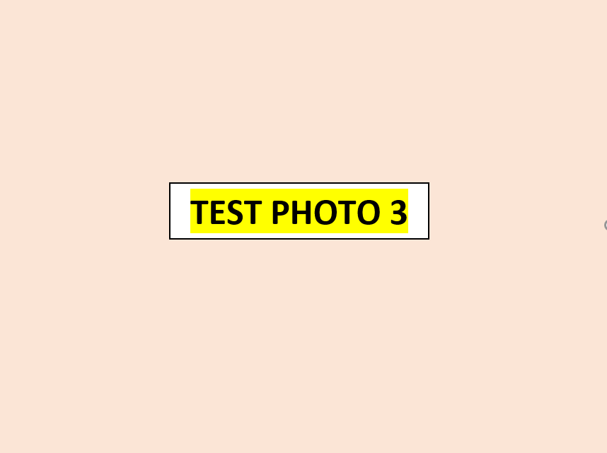
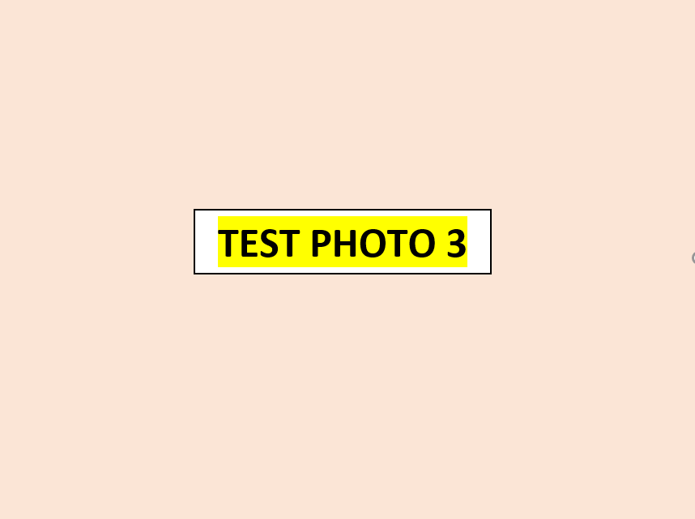

I am pursuing my Ph.D. in Engineering Technology at Purdue University, mainly focusing on Machine Learning (ML) in Healthcare Technology. I received my B.Sc. in Computer Science and Engineering from Patuakhali Science and Technology University, Bangladesh, in 2016 and my M.Sc. in Computer Science and Engineering from Dhaka University of Engineering Technology, Bangladesh, 2019. I have also been serving as an assistant professor at the Chattogram Veterinary and Animal Sciences University, Chattogram, Bangladesh. My research interests include Computer Vision (CV), ML in healthcare technology, biomedical informatics, NLP, and data analytics.


 
